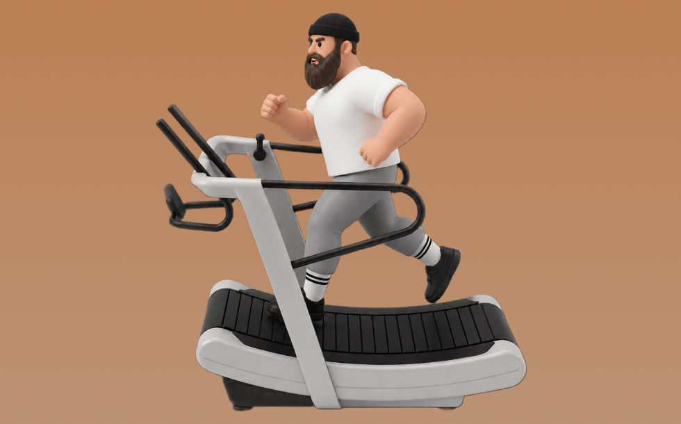

自走式トレッドミル

自走式トレッドミルとは、マシンを使って「自分の力でベルトを動かして走る／歩く」動作を行い、主に下半身や心肺機能を鍛える有酸素トレーニングです。出力がそのまま速度に反映され高強度になりやすいのが特徴で、脚でベルトを押し出しながら走行動作を繰り返します。これにより、心肺機能の強化や高いカロリー消費が期待できます。
- 対象部位
- 有酸素
- 器具
- マシン
- 記録形式
- 時間
- 別名
- 自走式トレッドミル / カーブトレッドミル / エアランナー / non-motorized treadmill / manual treadmill / self propelled treadmill / curved treadmill / air runner
YouTube動画
-
自走式トレッドミルの使用方法および使用例【GYM Become】
-
【フォーム解析】自走式トレッドミルで走ってみた２
-
自走式トレッドミル パーソナルトレーニング
-
#自走式トレッドミル【3分間走】
-
脚を細くする歩き方 ランニングマシンの設定方法！トレッドミル/Walking on a Treadmill to Tone Your Legs
-
#自走式トレッドミル 最高速度更新！
-
足が流れるとは。流れると何が悪いの？
-
【おうちでトレーニング vol.7】家庭用のトレッドミルで綺麗なフォームを作る方法
-
体力オワタ！自走式ランニングマシン！
-
脱初心者向け！トレッドミルでラントレーニング！
-
自走式トレッドミルの紹介
-
走りが30分で変わる。大台陸上×トレッドミル！
-
外で走るより効果あり！ランニングマシンの正しい使い方と効果を出す方法
-
【withトレッドミル】【フルver】簡単ウォーキングプログラム
-
トレッドミルで走力・スプリント力アップ！
-
ランニングマシンの使い方＜有酸素マシン＞
-
【withトレッドミル】【プログラムのみver】簡単ウォーキングプログラム
-
ランニングフォーム@トレッドミルは超オススメ
-
【音声】外走ると痛いのに、自走式トレッドミルだと痛くない現象にみる「痛みの原因」
-
美しさのトレッドミル.mp4
-
Toga一日一種目トレーニングファイル⑩トレッドミル編
-
トレーニング器具紹介 トレッドミル編
-
【TIPNESS】トレッドミルウォーク
-
【フル動画】10,000mペース走！！トレッドミルのお供に、フォーム確認!!
YouTubeショート
-
プロが教える正しいウォーキング！【アクトスWill_G】
-
【爆笑】時速25キロメートルのランニングマシーンww #funny #ハプニング #面白い #ランニングマシーン#爆笑
-
【行田グリーンアリーナ】「トレッドミル」トレーニングマシンの使い方
-
これが正しいランニングフォームの『足』です #たくプロ #走り方
-
【ランニング時の走り方】
-
一人だけ異次元の走りをしている大迫傑選手 #shorts
-
トレッドミル トレーニング動画
-
真下着地ができないランナーの9割が該当するひざ下振り出し走りとは！？#spiritsrun #ランニングフォーム #マラソン #マラソントレーニング #ランナー
-
トレッドミルrun 19km/h
-
自走式トレッドミルで正しい歩行を身につける
-
【キロ7分で良い‼️ゆっくり走れば速くなる】 マラソンのLSD（ロングスローディスタンス） #ランニング
-
No 58映像版すごいジムトレ「トレッドミル・ランニング」③【トレッドミルの操作と走行の実演】 #トレーニング #ランニング #ジム #ダイエット ＃健康 ＃美容 ＃fyp
-
\初心者に多い勘違い/お尻を使って走ってはいけない #shorts #ランニングフォーム改善 #トレッドミル #ランニング初心者
-
【トレッドミルで走ってみた】#short#有酸素運動
-
父コーチ 全力疾走。走り方 指導
動作方法
- ウォームアップで心拍を段階的に上げる
- 目的に合わせてペースを設定する
- 終了後はクールダウンで整える
動作ポイント
- 呼吸を止めない
- 開始直後に追い込みすぎない
ワンポイントアドバイス
- 体調に合わせて時間や強度を調整する
- ペースより継続を優先する
目的別回数設定
目的や体力に応じた一般的な目安です。無理のない範囲で調整してください。
- 筋力アップ
- 高強度 20〜60秒
- 筋肥大
- 中強度 10〜20分
- 持久力アップ
- 低〜中強度 20〜60分
YouTube動画について
動画はYouTubeの公開情報をもとに表示しています。内容は投稿者によるもので、Biggrによる監修ではありません。
アプリを入手
筋トレやトレーニングの記録はBiggrにお任せください。今すぐ無料で使い始められます。